Префектура Токусима · город Токусима · сладости
«Каю Аканэан» в Токусиме: сладости, в которых живёт Сикоку
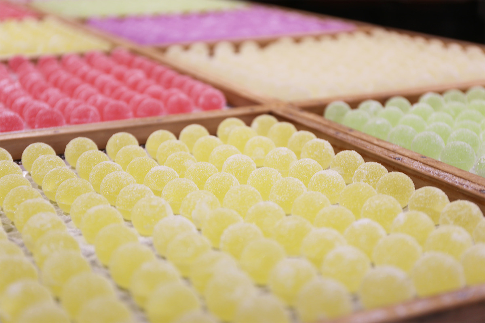
За старинной стеной из дикого камня прячется настоящая чайная комната. Здесь, в кондитерской «Каю Аканэан» напротив холма с замком Токусима, уже более сорока лет превращают фрукты Сикоку в ювелирные сладости.
Кондитерская
Хорошее из Сикоку становится сладостью
Кондитерская стоит почти в центре Токусимы, но место здесь тихое и зелёное: окна смотрят на холм, где высятся стены замка Токусима. Свои сладости «Каю Аканэан» делает на этом месте более сорока лет. Чистая вода Токусимы, отобранные фрукты и овощи для кондитера не фон, а главный материал. За сырьём здесь едут туда, где оно растёт, а потом не жалеют ни времени, ни труда.
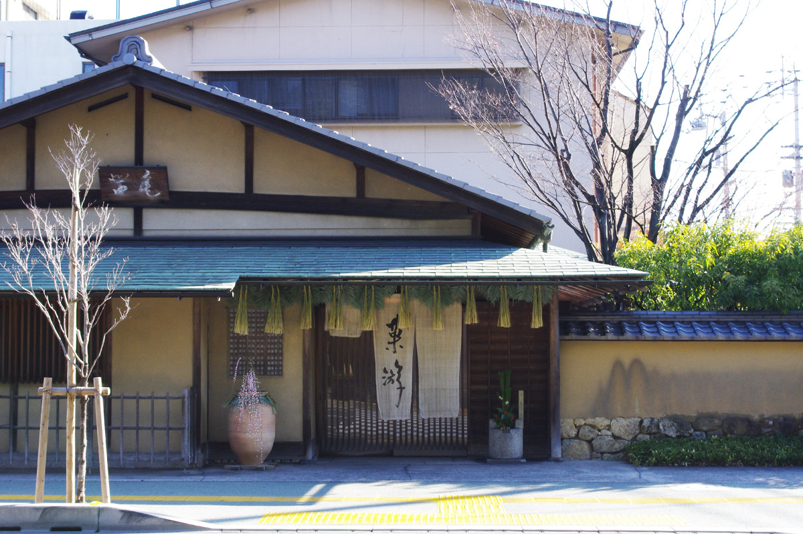
Компанию основали в 1980 году. Мастера «Каю Аканэан» хотят пронести японскую традицию, культуру и тонкое чувство красоты в следующие поколения. Свой принцип они формулируют просто: всё хорошее, что есть в Сикоку и в Японии, превращать в сладости. И это не только слова. «Ютама» из этой кондитерской получила серебряную медаль на конкурсе «Самый лучший сувенир», который проводит Японское агентство по туризму. Сладости, где к нарядному виду добавлены глубина вкуса и история сырья, высоко ценят по всей стране.
Пространство
Чайная комната, вокруг которой построили магазин
Здание главного магазина устроено необычно. Сначала здесь возвели настоящую чайную комнату, а уже внутри неё разместили лавку. Оттого в каждом углу чувствуется японская любовь к игре.
Например, наружную стену сложили способом ано-удзуми, переняв технику артели каменщиков Ано-сю, которые строили неприступные укрепления в эпоху Адзути-Момояма, во второй половине XVI века.
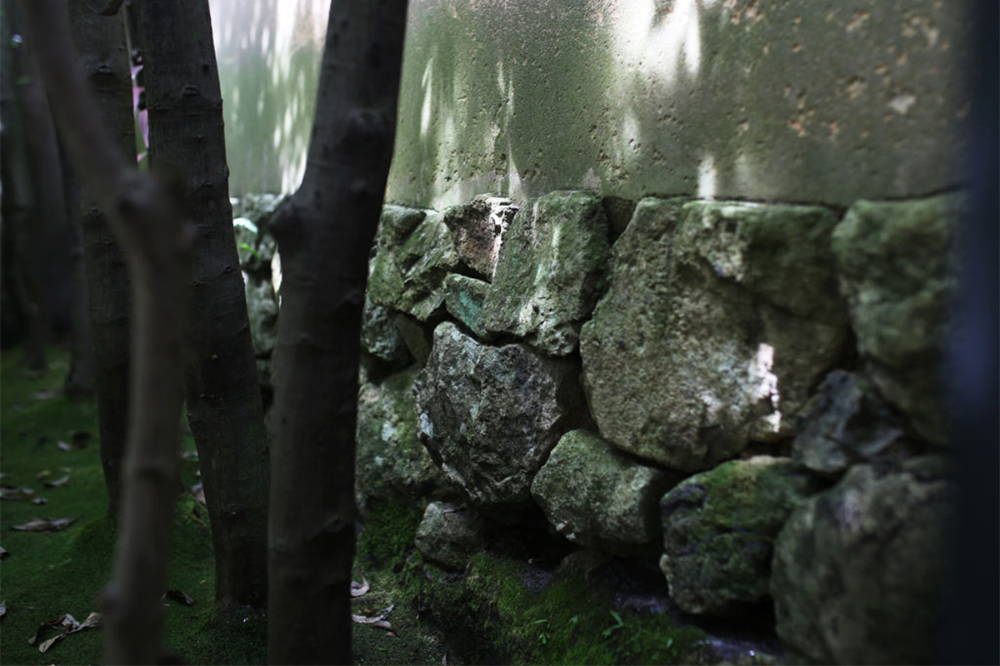
За пологом норэн гостя встречают приветствие хозяев и потолок адзиро. Адзиро это тонкие деревянные планки, сплетённые в шахматном узоре. Планки настолько тонки, что от шагов по залу по ним пробегает лёгкий шелест. В прежние времена такой потолок служил естественной сигнализацией: если в дом пробирался вор, он выдавал себя шумом.
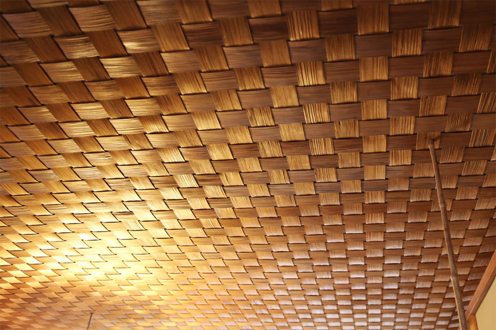
В глубине чайного зала видна комната на восемь татами. Это самое почётное пространство во всём доме, и потолок здесь ровный и гладкий. Грубый потолок адзиро в одном зале и спокойная отделка в другом задуманы как игра контрастов. Гладкую поверхность комнате придаёт кедр из Акиты, выросший в снежном краю, и он же держит сдержанную строгость этого пространства.
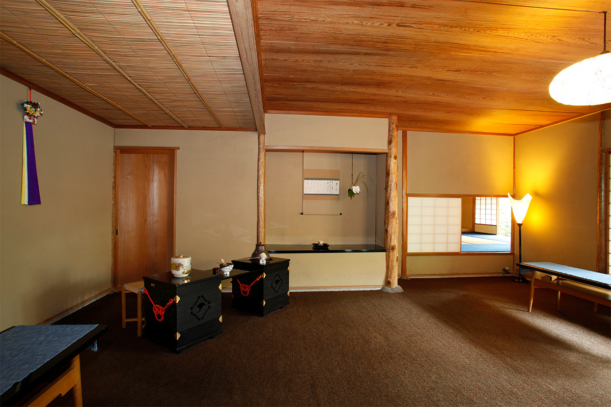
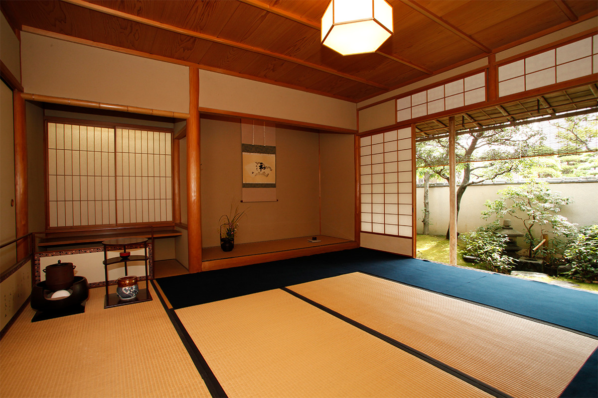
Сырьё
Ни капли халтуры ни в сырье, ни в руках
Токусима гордится чистой водой, без которой не сделать сладости, и фруктами и овощами, выращенными под щедрым солнцем. Из хороших местных материалов, не жалея труда ради их полного раскрытия, здесь делают сладости, в которых выражено тонкое японское чувство красоты. Каждая из них по-своему хороша.
Каждый год кондитеры ездят туда, где растёт сырьё, и говорят с производителями напрямую. Из этих разговоров и рождаются новые решения.
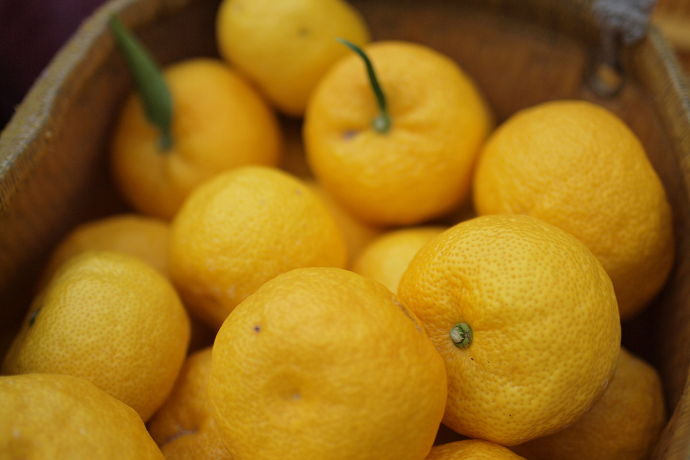
Вот какие сладости получаются из такого отобранного сырья.
Ютама
Пять вкусов в одном лакомстве
В основе «Ютама» пять плодов: юдзу из селения Китагава в префектуре Коти, органический судати, ямамомо из Авы, слива умэ из Мисато и юко. За образец взят японский обычай пяти сезонных праздников, а сами сладости похожи на самоцветы. Кажется, что это модная новинка, но «Ютама» продаётся без перерыва с самого открытия кондитерской.
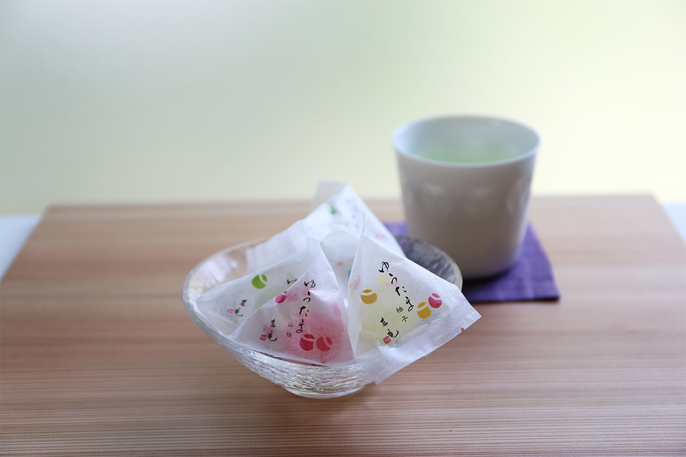
Пружинистая текстура достигается приёмом кингёку, который здесь переосмыслили. Отобранные цитрусы соединяют с растительным агаром кантэн, чтобы получились и упругий отскок, и прозрачный блеск камня. Стоит развернуть обёртку, и пять ярких ароматов плывут в воздухе. Потом ломается хрустящая сахарная оболочка, и во рту разливается густой сладко-кислый вкус.
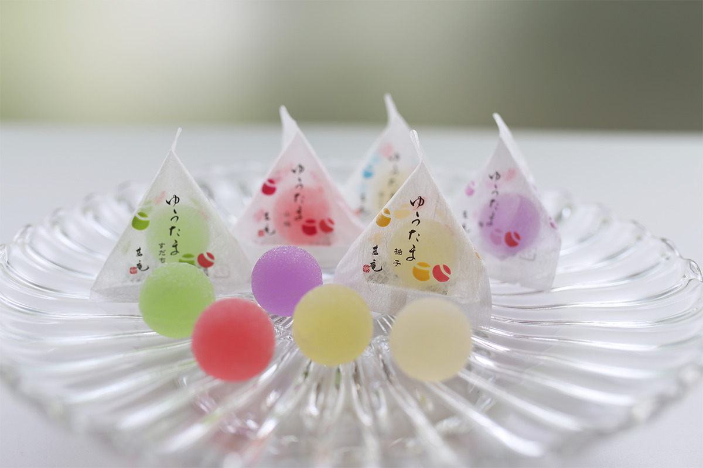
Юдзу из Китагавы
Юдзу из селения Китагава, которое называют лучшим в Японии краем, где растёт юдзу, отличается мягким и приветливым вкусом.
Судати
Органический судати от партнёрской плантации даёт чистый и благородный вкус.
Ямамомо из Авы
Милая ягода, которая летом раскрашивает горы, радует ярким цветом и глубоким вкусом.
Слива умэ из Мисато
Крупную сливу растили не спеша, в горной деревне, где кружат светлячки, и её вкус получился богатым и тонким.
Юко
Редкий органический плод, который называют призрачным фруктом, с тонким и глубоким вкусом и ароматом.
Наборы «Ютама» стоят 594 иены за 5 штук, 950 иен за 7 штук и 2268 иен за 18 штук.
Аваю
Мягкое моти с изумрудной начинкой
«Аваю» это мягкое моти, похожее на щёчку младенца, с начинкой из чуть пахнущего цитрусового варенья цвета нефрита посередине. Вкус этой сладости не менялся с открытия кондитерской, и именно она считается визитной карточкой «Каю Аканэан».
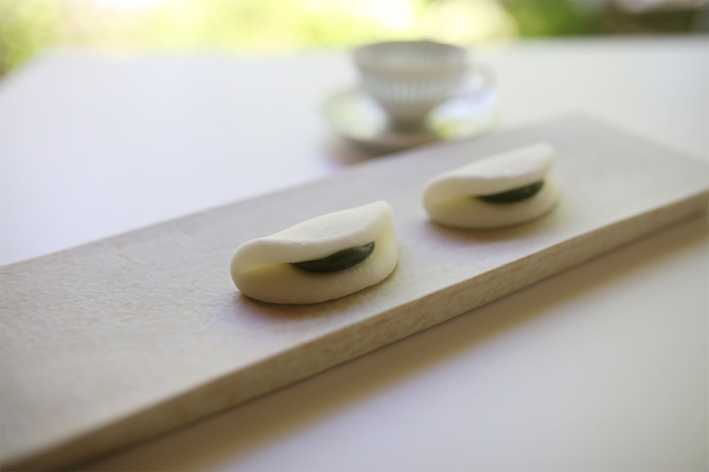
Гладкое мягкое белоснежное моти хабутаэ скрывает пасту усудзуми-ан: кожицу у фасоли адзуки снимали вручную, одну за другой. Красивый изумрудный цвет придаёт гардения кутинаси, и он напоминает о щедрой природе. Сладость чуть оттеняет цедра юдзу из Китагава. Незаметная добавка белого мисо добавляет глубины к нарядному и благородному вкусу.
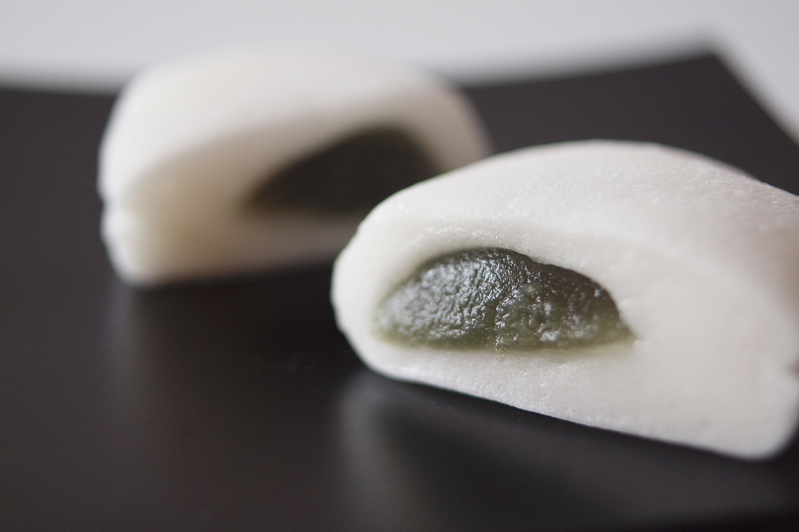
Наборы «Аваю» стоят 1296 иен за 6 штук, 1944 иены за 10 штук, 2808 иен за 15 штук, 3780 иен за 20 штук и 5400 иен за 30 штук.
Сладости «Каю Аканэан» уместны и как подарок, и в повседневной жизни, без лишней торжественности. Их удобно привезти из поездки или из командировки.
В простой и точно выверенной гармонии вкусов чувствуется главный принцип кондитерской: бережно раскрывать то, что даёт природа. Стоит заглянуть сюда и попробовать.
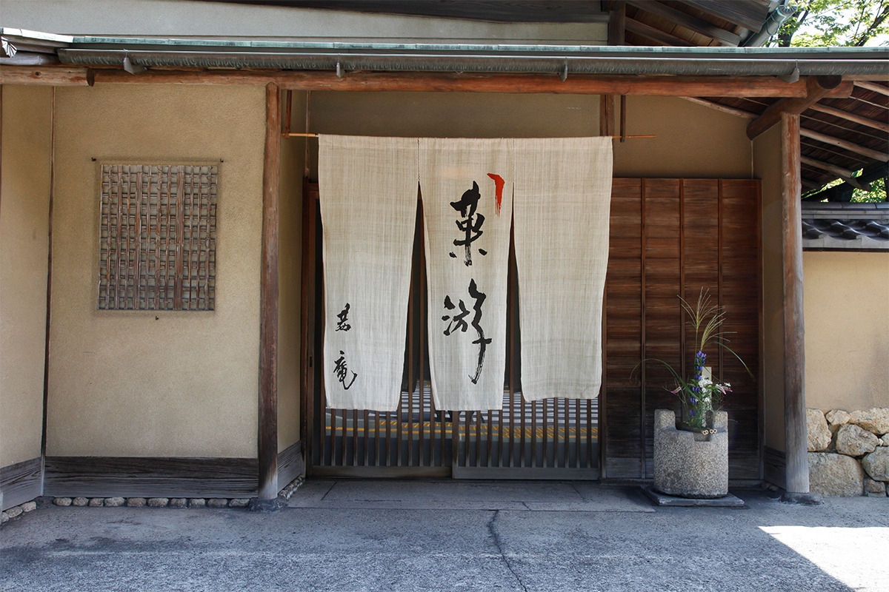
Каю Аканэан
- Адрес
- префектура Токусима, город Токусима, Токусима-тё, 3-44
- Телефон
- +81 88-625-8866
- Часы работы
- 9:00–18:00, чайный зал 11:00–16:00
- Выходные
- 1 и 2 января
- Сайт
- akanean.com